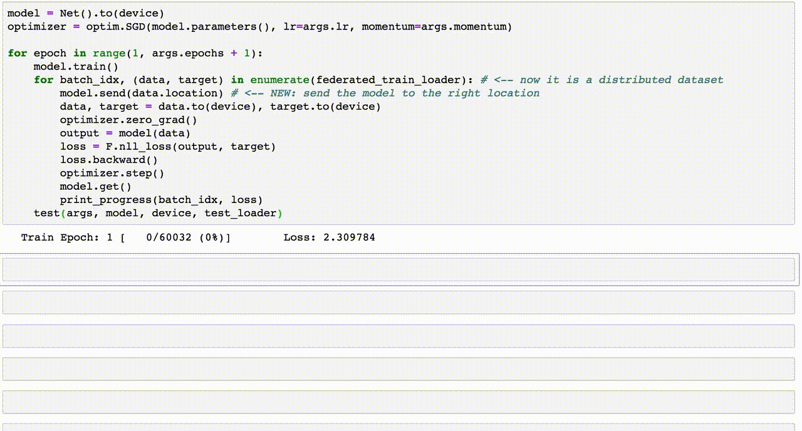

Théo Ryffel
Hey, welcome!
I'm a PhD student at ENS at the crossroads of Machine Learning and Cryptology
I'm interested in Privacy-Preserving Machine Learning and have started a PhD at ENS to work on this topic under the supervision of David Pointcheval and Francis Bach. I'm also a core contributor of the OpenMined project that builds practical tools for private AI, and a co-founder of Arkhn which builds concrete solutions for hospitals. I publish regularly here about my work and readings.
Deep Learning Federated Learning Private AI Secure Multi-Party Computation Differential Privacy Functional Encryption
Twitter Github Linkedin Google scholar ContactDeep Learning -> Federated Learning in 10 Lines of PyTorch + PySyft
Posted on March 1st, 2019
Simple code examples make learning easy. Here, we use the MNIST training task to introduce Federated Learning the easy way.
